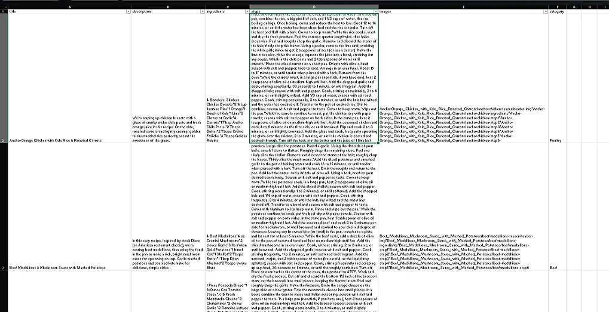
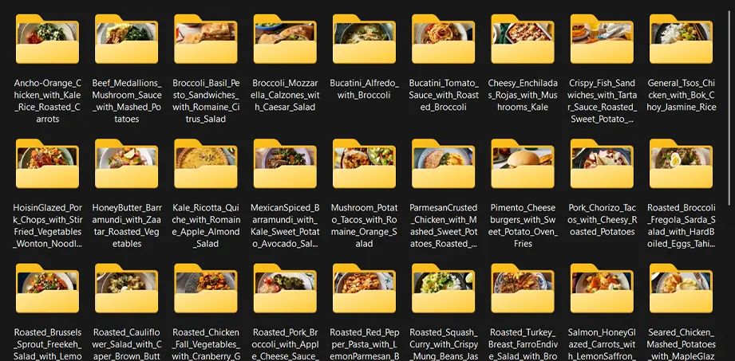
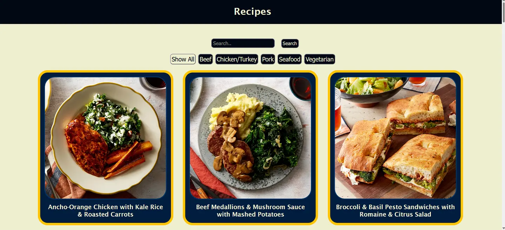
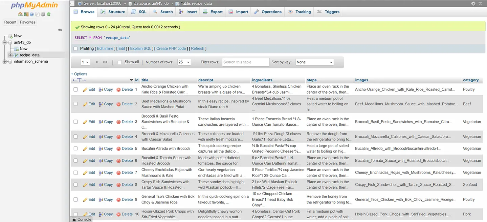
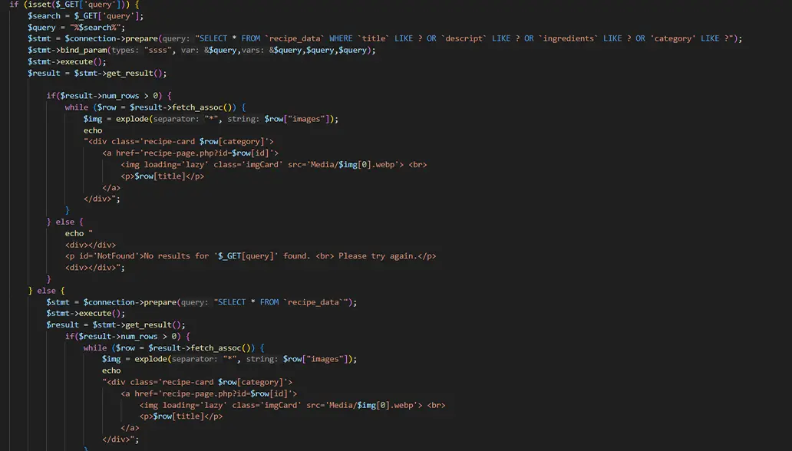
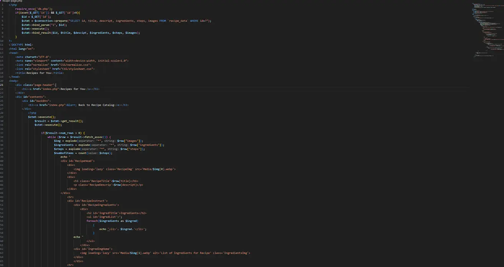

"Recipes for You" Case Study
Overview
"Recipe for You" is a recipe website made with PHP. Using PHP in tandem with MySql, I was able to code a website that draws information from a database to populate the contents of the website. For this project, I created a website that contains all the necessary functions someone would need if they were looking for a recipe. The majority of the website was coded with PHP while also utilizing HTML, CSS, and JavaScript.
Context and Challenge
Over the course of 11 weeks, I was tasked with created a website that utlilizes a database. For this project, I was provided with a folder containing the assets and information for 40 different recipes in PDF format. The website has to be responsive, has to have a search bar, has to have a filter system, has to fill the next page with the appropriate information upon clicking a recipe, and be stylized to be considered complete. I would be working alone to make sure that my website fulfils all of these requirements, including all of the coding, image optimization, and database creation.
Process and Insights
Planning
First, I worked with the assets. I collected the recipe name, the description, the ingredients, and the steps from each recipe and placed them into an excel sheet. Each column was named after what information it contained while the each row represented a recipe. Additionally, I created an image column for after I optimized the images and added a protein column to help with the filtering system.
Then I moved onto the images. Using Photoshop, I optimized the photos for each recipe, named them appropriately, and placed them into a media folder. I created an array with the image names, placing an asterisk between each name. The arrays were placed into the excel sheet before exporting the datalist as a CSV file.
Coding
Once I finished processing the data for all of the recipes, I started coding the HTML and CSS for the website. Because PHP will generate the information for the recipes, this code was function but mostly acted as a base to add the PHP to. This code created the boxes for the recipes, planned where the filters and search bar will be places, and how I would style the website. For the recipe page, I mainly use CSS to place the images next to each other and make sure each step had its corresponign image. Additionally, I used the HTML website to test how I would make the website responsive. I decided use blue, yellow, and cream as my color scheme because they reminded me of other online food services.
Besides the HTML and CSS, I also create JavaScript code that would help with the filtering system. This mainly comprised of code that would hide or show the recipe cards based on what protein category is being selected. This would work with the PHP as the PHP code would add the protein category as a class name to each recipe card.
Before starting the PHP code, I uploaded the CSV file containing all the data to the MySql online database. With the upload, I added another column in the data that would give each recipe and ID number. This would be important for calling each recipe.
Finally, I worked on the PHP code. I used PHP to gather whatever the user typed into the search bar, prepare the data, and search for all the data that matched the search query. If the user inputted a word that had no relevance to any of the recipe, the website displayed a no results screen. Additionally, I used the PHP to print the recipe cards. This code comprised of exploding the image arrays, inputting the image number "0" in the array, and echoing both the image and the recipe name. This echo would also put the image and the recipe name into a div, give the div an id name and class names, and an anchor tag to link it to the recipe page. The code was also a part of an if-else statement that would display all the recipes when the user initially lands on the page.
As for the recipe page, the code was much the same except the first bit of code collected the ID number of whatever recipe was clicked. Then it collected all the relevant information before echoing the format I created in the HTML website while inserting the information it collection.
When I was finished with the PHP, I went back through my CSS code to clean up formatting.
Final Solution
The final website for this project is "Recipes for You." It is a fully responsive website that displays all 40 recipes upon landing. Then, if the user uses the filter, it will sort the recipes based on what the user selected. If the user types someething into the search bar, the website will display all the recipes with the relevant information, and if there isn't any relevant information, then it will tell the user there are no results. Finally, when the user clicks on a recipe, the website collects the ID number and populates the recipe page with the information for that specific recipe.
Results
The project was a success. It met all the goals for the PHP content alongside making the entire website responsive and hosting it on the Drexel server. All 40 recipes are included and GitHub has all the appropirate files. Finally, all the code was validated before being uploaded. Overall, I'm proud of myself for working on this project. I learned a lot about how to use PHP and MySql. While I did have to backtrack a few times to make sure my CSS looked nice and my images were formatted properly, in the end, "Recipes for You" turned out pretty nice.